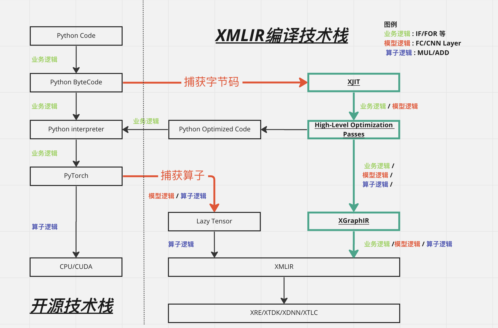
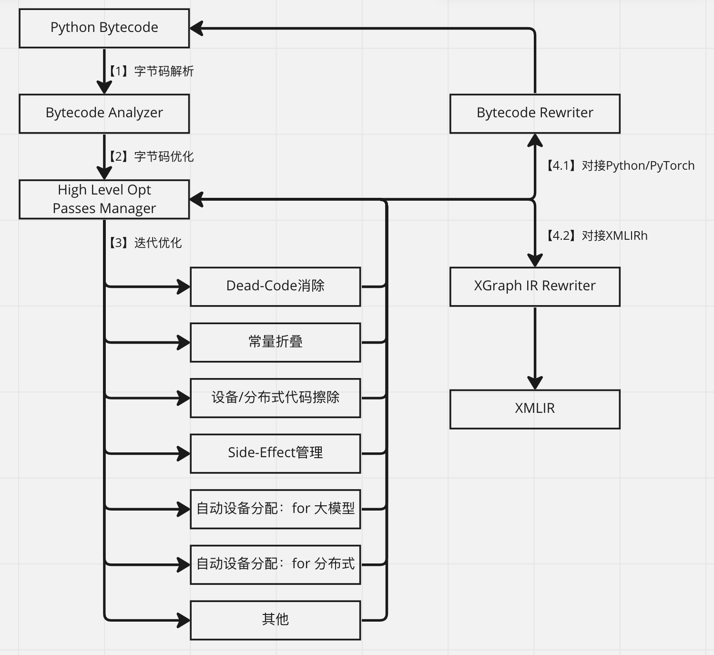

Python AI编译前端¶
2022.11.24 XMLIR整体架构与产品暂定名称（与 @许叶华 讨论的初步结构和名称，随时更新）
- xacc：XPU AI Compiler Collection；以XMLIR为编译后端，结合新的编译前端扩展成完整AI编译工具链；
- xacc.jit/xacc.aot: xacc的JIT/AOT API入口；
- xacc.frontend: xacc的编译器前端，主要负责接入API、前端表达（python的bytecode和深度学习框架的接口）的分析、理解和优化；
- xacc.backend：xacc的编译器后端，主要负责执行过程的分析和优化；包括codegen；
2022.11.23 Bytecode Rewrite与TorchScript讨论
- 与 @陈庆澍讨论Bytecode Rewrite在Paddle上应用的可行性，结论是技术可行，但从项目落地角度考虑先focus在PyTorch的支持上；
- 与 @许叶华讨论TorchScript模型与Bytecode前端模式的异同： a. TorchScript基于AST变换，不能捕获Python的完整语义； b. TorchScript无法fallback回Python+PyTorch来执行，一旦编译失败就完全无法加速； c. Bytecode编译前端可以更完整捕获语义，即便编译失败也能fallback回Python+PyTorch执行； d. Bytecode编译前端能提供”尽力而为”的加速模式——如果模型中只有50%的部分XPU支持加速，那就让XMLIR加速这50%。而TorchScript模式哪怕模型只有1%的部分XPU不支持加速，就完全不能加速。
背景¶
简介¶
定位：Python AI编译前端（名字暂定XJIT）是XMLIR编译技术栈的一部分，负责：
- 分析客户代码中的计算逻辑，交给XMLIR编译栈进行编译优化；
- 更好的兼容PyTorch框架，提供更好的用户体验，提高模型交付速度；
技术价值
- 抓取更为完整的语义，包括分支和循环等逻辑；
- 抓取更多高层次信息，比如完整的Layer相关信息，而不是过细粒度的算子信息；
- 提供更好的用户使用体验，让用户迁移模型到xpu的过程更为自动化； 比如用户想要迁移的某模型代码：
借助我们的编译前端，用户只需执行：
产品价值
-
帮助XMLIR适配更多的用户模型，让XPU获得更大的市场空间；
-
提高XMLIR的交付速度，从客户角度更快落地、成单；
AI框架前端技术¶
- 静态图 vs DSL
a. Caffe：2014-2017，第一代深度学习框架，使用pbtxt语法定义静态计算图图； b. Theano：2007-2017，自动微分+C代码生成，与Caffe同属于第一代框架； c. Torch 7：2002-2018，基于lua语言的科学计算框架，可以支持深度学习；
- 静态图+Python DSL
a. Tensorflow 1.x：2015-2019，第二代深度学习框架，首次基于细粒度算子构建深度学习模型；
- define-by-run
a. Chainer：2015-2019，日本某公司开发的深度学习框架，首次提出了define-by-run模式； b. Pytorch：2016-今，基于torch的C代码基础库开发的define-by-run模式框架，在学术界非常流行； c. Tensorflow 2.x：2019-今，谷歌迫于PyTorch的竞争，基于eager+动态图执行模型重构了tensorflow；
- 函数式编程框架
a. JAX：2020年左右，谷歌推出的新一代深度学习框架，JAX=AutoGrad+XLA。JAX抛弃了tensorflow中静态图的设计，转而使用Numpy语法，混合AutoGrad进行梯度求导，使用XLA进行编译加速。 b. funtorch：2022年PyTorch社区推出的JAX仿制品，意在提供和JAX类似的高阶函数特性； 小结：AI框架的前端技术并未像系统同学期望的那样，向静态图架构去演进，倒是反其道而行，专项更贴近Python语法，更贴近用户习惯的方向在演进。
AI框架后端技术¶
与前端技术同步发展的是AI框架的后端技术：
- Layer模块 a. caffe b. Theano c. torch 7
- 算子+DAG a. tensorflow
- 编译优化 a. XLA编译优化：tensorflow b. JIT编译 i. tf.function ii. torch.jit c. TVM与MLIR i. TVM ii. MLIR
- Python JIT编译优化 a. torchdynamo
小结：后端技术主要趋势是深度异步化和编译技术栈。
总结¶
最近谷歌和Facebook在深度学习框架上推出的新技术有两个趋势：
- 编译优化是AI框架的发展趋势；
- AI框架前端技术，越来越向Python语法靠近；
Python前端+MLIR后端是一个比较完备的编译技术栈：
- 有技术基础，并且符合未来技术趋势；
- 能够帮助芯片类公司扩大市场空间，提高交付速度；
技术方案¶
overview¶

XJIT从字节码捕获用户执行逻辑，并输出包含如下信息的图：
- 业务逻辑；
- 模型逻辑；
- 算子逻辑（算子DAG）；
对比基于Lazy Tensor的tracing技术，XJIT能够完整捕获分支和循环逻辑，并且将高层信息带给算子图，为XMLIR中的算子图优化带来更多的信息。
XJIT可以直接输出XGraph IR给XMLIR，或者通过rewrite重写Python Bytecode，再交给Python解释器执行。这样设计有两个好处：
- 技术优势：可以对比三条执行路径的结果，方便开发和调试；
- 产品优势：可以开放XJIT给目标用户，帮助用户导出graph给到研发来进行评估和调试；
标准编译流程¶
标准编译流程是指对输入的Python字节码进行优化，并最终输出优化后字节码、图IR的过程：

标准编译流程主要由三部分组成：
-
字节码分析；
-
高层设备无关优化，具体包含如下pass：
a. 死代码消除，用于降低整个计算图的复杂度，便于XMLIR的图编译优化； b. 常量折叠，用于提取不变量，降低XMLIR的图编译复杂度； c. 设备、分布式代码擦除：自动擦除模型代码内的设备绑定代码与分布式训练绑定代码，能够帮助XMLIR更好的适应用户代码； d. 副作用管理：用于管理Python语言的副作用，比如全局变量赋值等； e. 自动设备分配：用于更好的支持大模型和分布式；
- Bytecode/GraphIR Rewriter：根据优化结果自动重写字节码或者图IR；
高级（特色）编译流程¶
高级编译流程，是指基于输入的Python字节码，向用户提供如下高阶功能：
- JIT 缓存与AOT编译：XJIT对字节码的编译结果进行缓存，并且通过缓存实现AOT编译；
- PGO编译：Profile Guided Optimization，是指XJIT通过Profile结果指导编译优化的过程；
- 自动低精度/混合精度计算：借助PGO机制，在考虑编译速度的同时考虑编译精度；
一些问题的分析:
Q：为何在XJIT中实现缓存、PGO和低精度等特性？ A：XJIT与用户执行Python代码的过程耦合，可以较好的与Python的执行流程互动。并且可以通过Bytecode rewrite的机制，向Python解释器注入这些高阶功能需要的代码；
Q：这些功能需要添加那些pass？ A：需要添加一些适配PGO与低精度计算的pass，这些pass向上对接功能特性，向下服务XMLIR编译技术栈；比如：
- 低精度相关pass：量化与反量化，剪支操作等；
- pipeline相关优化，比如自动tensor切分和device分配；
- 大模块replace操作，比如整体性替换transformer模块、卷积模块；
补充编译流程¶
补充编译流程用于编译PyTorch模型以外的代码，比较常见的有：
- numpy数值计算代码；
- pandas表格数据计算代码；
XJIT可以通过Bytecode rewrite技术，将这些计算也抽象成XMLIR的计算图表达，从而实现对整体数据流的加速。而训练数据流本身作为训练框架的一部分，对于训练速度和训练效果都有着至关重要的影响。
整体流程¶
XJIT整体分为两大部分：
- 语言基础设施：负责与Python语言的交互：
a. Interpreter Hook：注入到Python解释器中，截获Python执行流； b. Compiler Hook：在Interpreter Hook中，回调JIT编译器完成编译； c. Cache & AOT：缓存编译结果，或者通过编译实现AOT；
- JIT编译器：
a. Compiler Function：JIT编译器的驱动函数，驱动整个编译流程执行； b. Bytecode Analyzer：分析Python字节码，并联合High-Level Optimization Passes执行优化； c. Pass Manager：用于管理Bytecode Analyzer中的优化pass； d. Bytecide Rewriter：将优化后的程序重新生成执行代码，支持XMLIR后端和其他后端（其他后端用于调试目的）； e. Backend Driver：用于Bytecide Rewriter中驱动编译后端执行优化； f. Generated Backend Bytecode：由Bytecode Rewriter输出的Python字节码，会再交给Interpreter Hook注入给Python Interpreter来执行； g. XMLIR/PyTorch Backend：用于执行计算DAG，XMLIR使用自己的execution engine，PyTorch使用PyTorch自身；